Airtable Interface Screenshot Analysis
Visual review of the Airtable dashboard screenshots captured from the client base on August 14, 2026.
Source And Scope
The screenshots were copied from the Desktop into airtable/assets/interface-screenshots and renamed with stable filenames from airtable-interface-01.png through airtable-interface-14.png.
This page analyzes what the visible interface screens are trying to accomplish. It should be read together with Airtable Interfaces, which contains the metadata extracted from Airtable for page names, source tables, dashboard elements, fields, and aggregation logic.
Use these screenshots as product intent evidence only. They are not a final UI specification, and they should not be shared outside the project without confirming whether visible screenshots contain any client-sensitive data.
Screenshot Map
| Screenshots | Airtable page | Visible intent | Product mapping |
|---|---|---|---|
| 01, 02 | Daily Sales Dashboard | Store and date-range filters, summary cards for sales/prescriptions/vaccines/OTC, trend charts, day-of-week comparison, and a store leaderboard. | Phase 1 starter Daily Sales dashboard. |
| 03 | KPI Dashboard | Store filter, latest KPI count, and scorecard rows grouped by pharmacy. | Phase 1 KPI scorecard view for tracking target, actual, and status by store. |
| 04, 05, 06 | Technician Dashboard | Assigned task workload, high-priority and overdue task counts, task status/category charts, task list, and fridge temperature logging history. | Phase 1 role dashboard foundation; richer task and compliance workflow automation belongs to Phase 2. |
| 07, 08, 09, 10 | Bookkeeper Financials | Store/month filters, monthly revenue, gross profit, EBITDA, gross margin, revenue trends, revenue type breakdown, year-to-date pivot, and KPI/margin scorecards. | Phase 1 financial dashboard shell with real values filled from approved operational and batch sources as data becomes available. |
| 11, 12 | Owner Dashboard - business insight section | Cross-store executive view for monthly revenue, prescription volume, KPI trend charts, KPI status distribution, KPI matrix, and business oversight rows. | Phase 1 owner dashboard with cross-store rollups and drill-down tables. |
| 13, 14 | Owner Dashboard - sales/store performance section | All-store daily sales, prescription volume, vaccine count, OTC sales, record count, store/day trends, and pivot-style daily sales comparisons. | Phase 1 owner-level sales dashboard, with the same source metrics reused from Daily Sales. |


Quick Analysis
- The Airtable setup is already organized around roles: owner, bookkeeper, technician, plus shared KPI and daily sales views.
- The visible dashboards follow a consistent pattern: filters first, headline metric cards, trend charts, then detail grids or pivot tables.
- Phase 1 can replicate this at starter level without advanced analytics: role-specific pages, store/date/month filters, KPI cards, simple charts, and drill-down tables.
- Several screens show zero or empty values, so the screenshots are stronger as workflow/design evidence than as data evidence.
- Technician views are more operational than analytical. They point toward task queues, proof of completion, and compliance logging.
- Bookkeeper views need both monthly financial data and KPI scorecard data. These should be treated as business reporting models, not raw webhook tables.
- Owner views combine financial KPIs, sales activity, operational tasks, compliance, and doctor relationship data. Phase 1 should keep this simple and readable; Phase 2 can add workflow health and automation depth.
- The product should reuse the same underlying dashboard API patterns across roles, with role-based access determining pharmacy scope and allowed widgets.
Implications For Our Product
| Area | Recommendation |
|---|---|
| Navigation | Use role-specific dashboard routes instead of exposing every Airtable-style page to every user. |
| Dashboards | Implement reusable dashboard components: metric card, trend chart, breakdown chart, pivot/table, status badge, and filter bar. |
| Data access | Owner can see cross-store summaries; bookkeeper sees assigned financial scope; technician sees assigned store and own task/compliance work. |
| Data model | Do not query raw PrimeRx payloads from dashboards. Use canonical event data, approved financial snapshots, and dashboard-ready read models. |
| Phase 1 | Build starter dashboards for all roles using the visible Airtable layout pattern, even if some values are placeholders until data feeds are finalized. |
| Phase 2 | Add operational workflows, refill queues, reminders, doctor CRM follow-ups, and automation-driven task generation. |
Screenshot Gallery
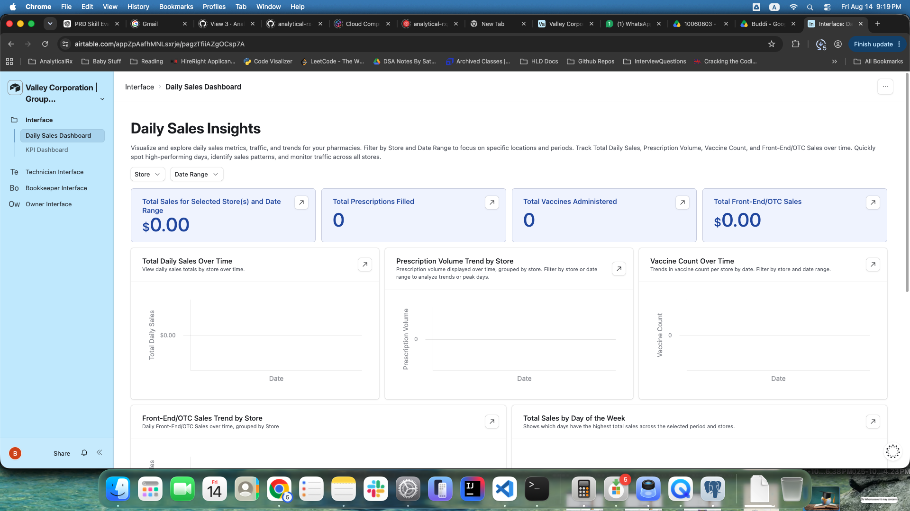
Daily Sales Dashboard
Filters, metric cards, and trend chart placeholders.
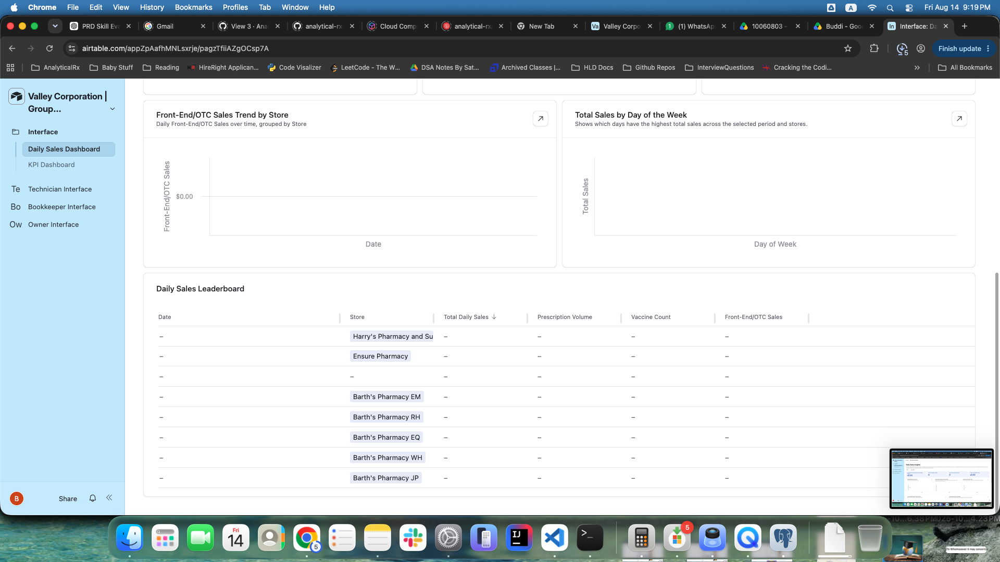
Daily Sales Detail
OTC/day-of-week charts and leaderboard table.
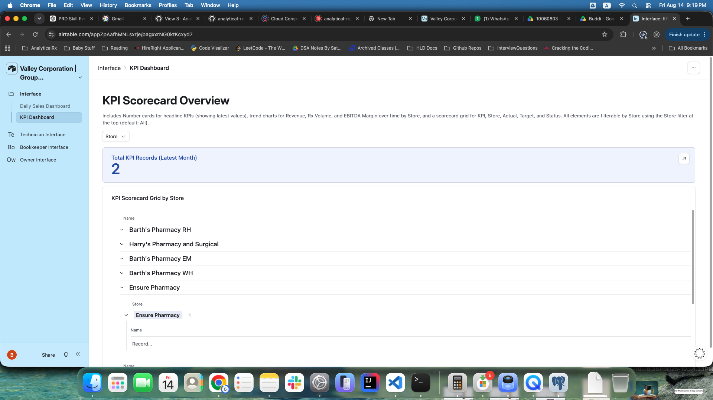
KPI Dashboard
Store-filtered scorecard overview.
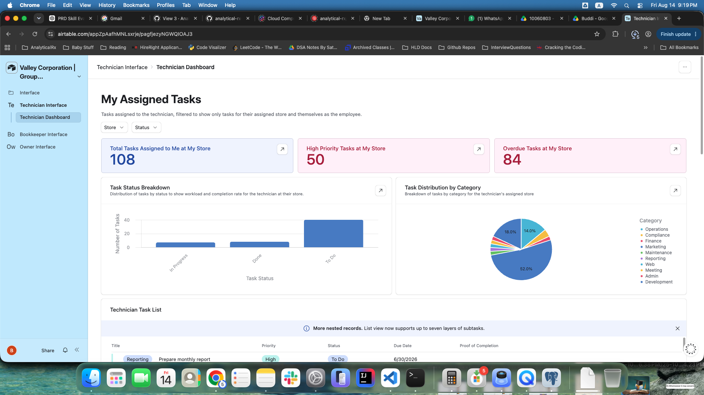
Technician Tasks
Assigned, high-priority, overdue, status, and category views.
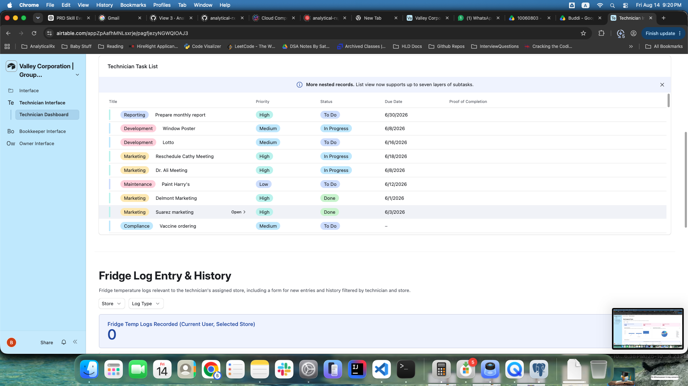
Technician Task List
Task rows and fridge log entry starting point.
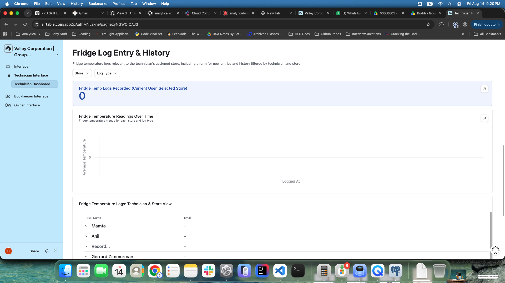
Fridge Log History
Compliance log count, trend chart, and history rows.
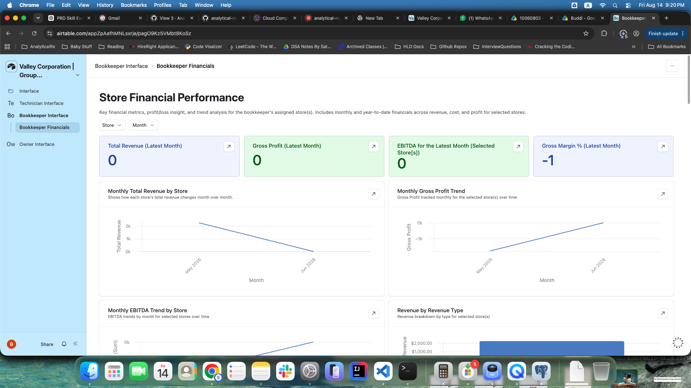
Bookkeeper Financials
Monthly financial cards and trend charts.
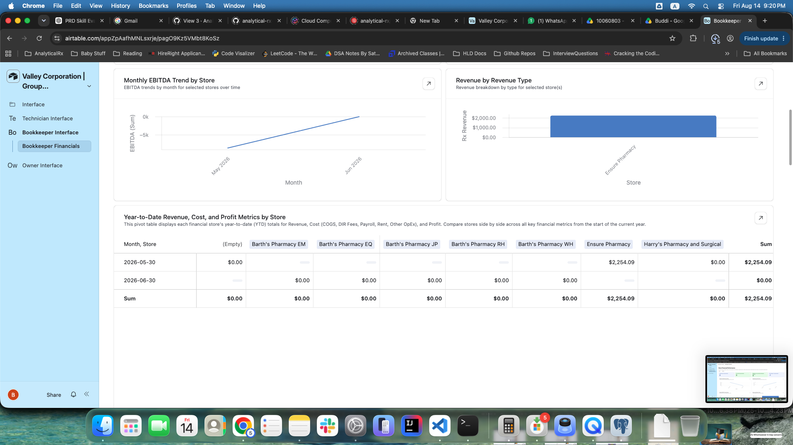
Financial Pivot
Year-to-date store comparison table.
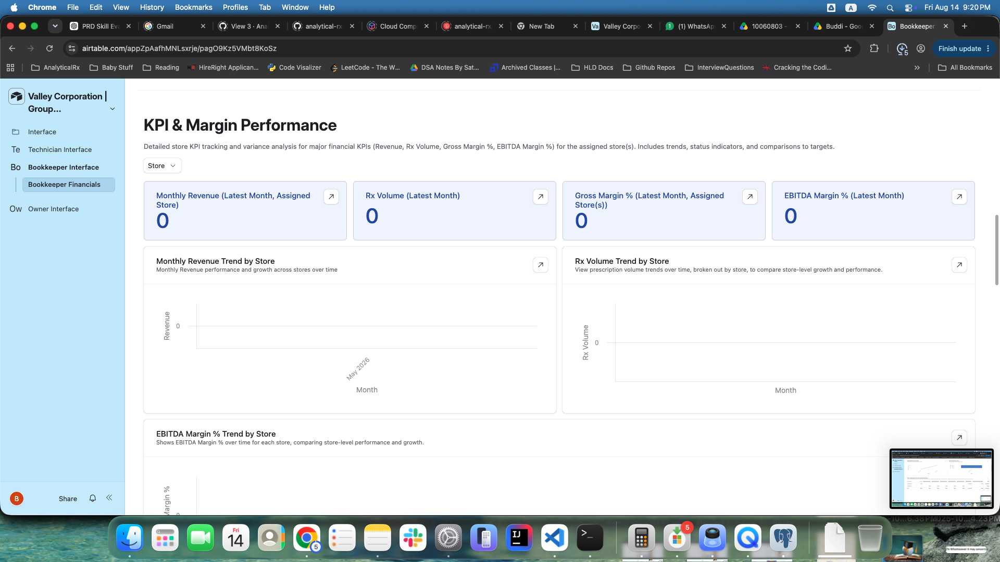
KPI And Margin
Revenue, Rx volume, gross margin, and EBITDA margin view.
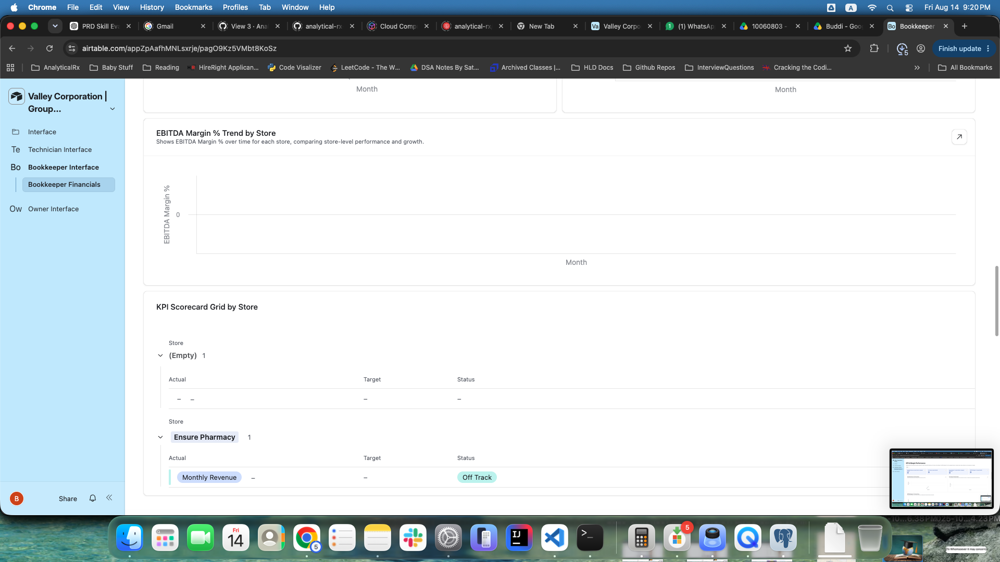
KPI Scorecard Grid
Actual, target, and status rows grouped by store.
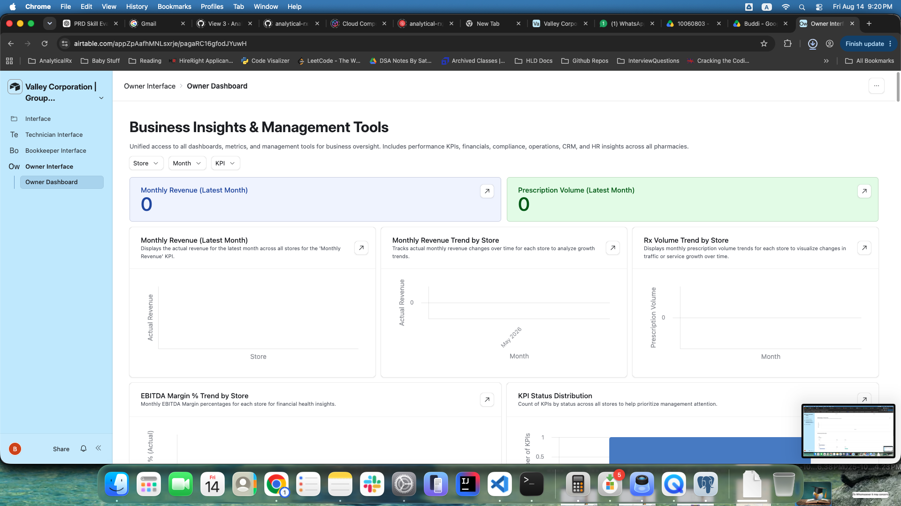
Owner Insights
Executive KPI cards and cross-store trend charts.
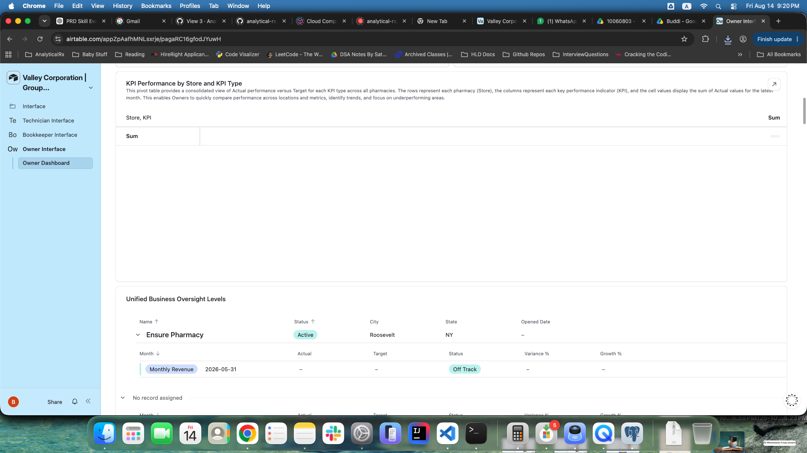
Business Oversight
KPI matrix and store-level oversight rows.
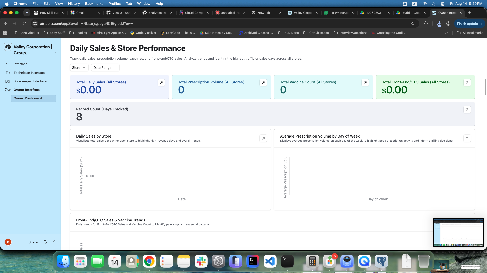
Owner Sales
All-store daily sales and prescription activity view.
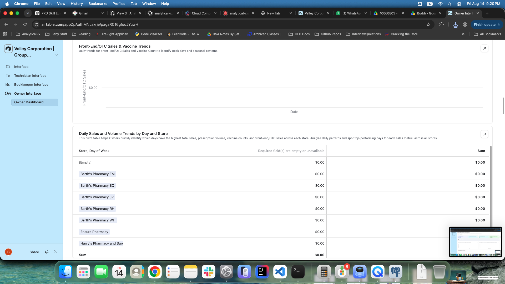
Sales Pivot
Daily sales and volume trends by store and day.